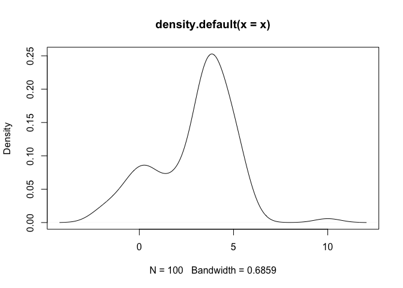
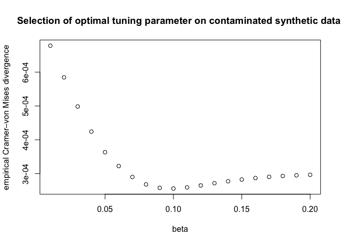
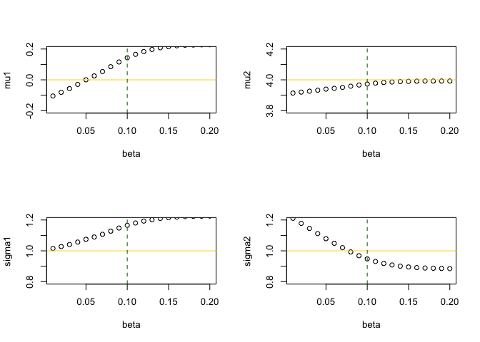

The goal of robustGMM is to implement the robust Gaussian Mixture Model (GMM) estimation based on Fujisawa and Eguchi, 2006.
You can install the development version of robustGMM from GitHub with:
# install.packages("devtools")
devtools::install_github("ge-li/robustGMM")This is a basic example which shows you how to solve a common problem:
## Generate a 2-component mixture
library(robustGMM)
set.seed(404)
lambda <- c(0.25, 0.75)
mu <- c(0, 4)
sigma <- c(1, 1)
x <- rnormix(n=100, lambda, mu, sigma)
x[which.max(x)] <- 10 # outlier
plot(density(x))
The standard EM algorithm will give estimation results as follows:
standard_mod <- mixtools::normalmixEM(x, lambda, mu, sigma)
#> number of iterations= 23
standard_mod$lambda
#> [1] 0.2349909 0.7650091
standard_mod$mu
#> [1] -0.128685 3.906640
standard_mod$sigma
#> [1] 1.003697 1.244186The robust EM algorithm in this package will give:
robust_mod <- robustGMM(x, lambda, mu, sigma, beta=0.1, verbose=TRUE)
#>
#> ── Fitting Robust Gaussian Mixture Model ───────────────────────────────────────
#> ℹ Iter: 0, Beta-likelihood: 7.462102
#> ℹ Iter: 1, Beta-likelihood: 7.464625
#> ℹ Iter: 2, Beta-likelihood: 7.464909
#> ℹ Iter: 3, Beta-likelihood: 7.465083
#> ℹ Iter: 4, Beta-likelihood: 7.465208
#> ℹ Iter: 5, Beta-likelihood: 7.465299
#> ℹ Iter: 6, Beta-likelihood: 7.465365
#> ℹ Iter: 7, Beta-likelihood: 7.465414
#> ℹ Iter: 8, Beta-likelihood: 7.465451
#> ℹ Iter: 9, Beta-likelihood: 7.465478
#> ℹ Iter: 10, Beta-likelihood: 7.465498
#> ℹ Iter: 11, Beta-likelihood: 7.465513
#> ℹ Iter: 12, Beta-likelihood: 7.465524
#> ℹ Iter: 13, Beta-likelihood: 7.465532
#> ℹ Iter: 14, Beta-likelihood: 7.465538
#> ℹ Iter: 15, Beta-likelihood: 7.465543
#> ℹ Iter: 16, Beta-likelihood: 7.465547
#> ℹ Iter: 17, Beta-likelihood: 7.465549
#> ℹ Iter: 18, Beta-likelihood: 7.465551
#> ℹ Iter: 19, Beta-likelihood: 7.465553
#> ℹ Iter: 20, Beta-likelihood: 7.465554
#> ✔ Iter: 21, Beta-likelihood: 7.465555
robust_mod$lambda
#> [1] 0.2787902 0.7212098
robust_mod$mu
#> [1] 0.1430803 3.9728562
robust_mod$sigma
#> [1] 1.1657071 0.9474814
betas <- seq(0.01, 0.2, by=0.01)
div <- numeric(0)
for (beta in betas) {
div <- c(div, loo_cvm_div(x, lambda, mu, sigma, beta))
}
plot(betas, div, xlab="beta", ylab="empirical Cramer–von Mises divergence",
main="Selection of optimal tuning parameter on contaminated synthetic data.")
res <- purrr::map_dfr(betas, ~unlist(robustGMM(x, lambda, mu, sigma, .)))
res
#> # A tibble: 20 × 8
#> lambda1 lambda2 mu1 mu2 sigma1 sigma2 beta l_beta
#> <dbl> <dbl> <dbl> <dbl> <dbl> <dbl> <dbl> <dbl>
#> 1 0.239 0.761 -0.105 3.91 1.02 1.21 0.01 97.0
#> 2 0.243 0.757 -0.0813 3.92 1.03 1.18 0.02 47.1
#> 3 0.247 0.753 -0.0568 3.93 1.04 1.15 0.03 30.4
#> 4 0.251 0.749 -0.0296 3.93 1.06 1.11 0.04 22.2
#> 5 0.256 0.744 0.000215 3.94 1.07 1.08 0.05 17.2
#> 6 0.260 0.740 0.0254 3.94 1.09 1.05 0.06 13.9
#> 7 0.265 0.735 0.0535 3.95 1.11 1.02 0.07 11.6
#> 8 0.270 0.730 0.0852 3.96 1.13 0.993 0.08 9.87
#> 9 0.274 0.726 0.116 3.97 1.15 0.968 0.09 8.53
#> 10 0.279 0.721 0.143 3.97 1.17 0.947 0.1 7.47
#> 11 0.282 0.718 0.165 3.98 1.18 0.931 0.11 6.60
#> 12 0.285 0.715 0.184 3.98 1.19 0.918 0.12 5.89
#> 13 0.288 0.712 0.197 3.99 1.20 0.908 0.13 5.28
#> 14 0.289 0.711 0.208 3.99 1.21 0.900 0.14 4.78
#> 15 0.291 0.709 0.216 3.99 1.22 0.895 0.15 4.34
#> 16 0.292 0.708 0.221 3.99 1.22 0.891 0.16 3.96
#> 17 0.292 0.708 0.225 3.99 1.22 0.888 0.17 3.63
#> 18 0.293 0.707 0.226 3.99 1.22 0.887 0.18 3.33
#> 19 0.293 0.707 0.227 3.99 1.22 0.885 0.19 3.08
#> 20 0.293 0.707 0.228 3.99 1.23 0.885 0.2 2.85
par(mfrow=c(2, 2))
plot(mu1 ~ beta, res, ylim=c(mu[1]-0.2, mu[1]+0.2))
abline(h = mu[1], col="gold")
abline(v = betas[which.min(div)], col="darkgreen", lty=2)
plot(mu2 ~ beta, res, ylim=c(mu[2]-0.2, mu[2]+0.2))
abline(h = mu[2], col="gold")
abline(v = betas[which.min(div)], col="darkgreen", lty=2)
plot(sigma1 ~ beta, res, ylim=c(sigma[1]-0.2, sigma[1]+0.2))
abline(h = sigma[1], col="gold")
abline(v = betas[which.min(div)], col="darkgreen", lty=2)
plot(sigma2 ~ beta, res, ylim=c(sigma[2]-0.2, sigma[2]+0.2))
abline(h = sigma[2], col="gold")
abline(v = betas[which.min(div)], col="darkgreen", lty=2)